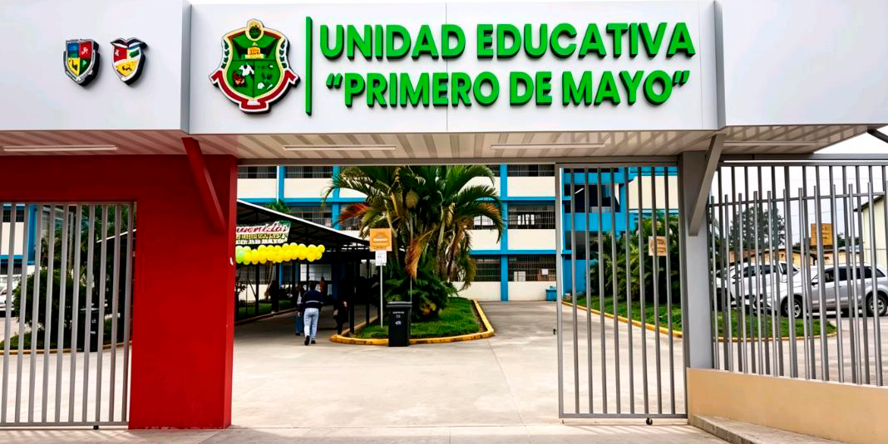
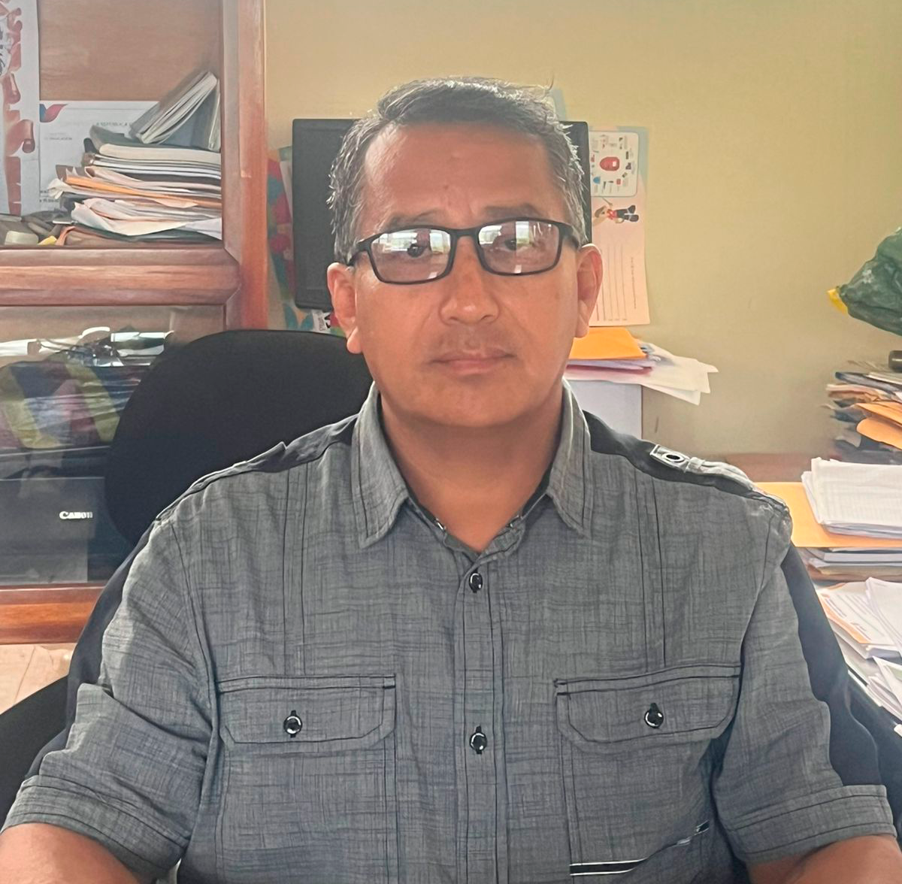

Primero de Mayo
Primero de Mayo
Primero de Mayo
Primero de Mayo
Primero de Mayo
Primero de Mayo


Bienvenidos a la Unidad Educativa Primero de Mayo, un espacio de formación donde
cada estudiante es protagonista de su propio crecimiento. Aquí cultivamos no solo
conocimientos académicos, sino también valores humanos, disciplina, creatividad y
sentido de comunidad.
Con más de 1.300 estudiantes, nuestra institución se consolida como un centro
educativo
vibrante,
diverso y comprometido con la excelencia. Cada año, cientos de jóvenes confían en sus sueños en
nuestras aulas para prepararse para un futuro brillante.
Nuestras Especialidades / Áreas Técnicas
• Conservación y Procesamiento de Lácteos
Formamos estudiantes en técnicas de producción, conservación y transformación de productos lácteos,
desarrollando conocimientos en higiene, control de calidad y elaboración de derivados como queso, yogurt
y
mantequilla. Esta especialidad impulsa el emprendimiento y fortalece el desarrollo agroindustrial con
prácticas responsables y sostenibles.
• Técnica Agropecuaria
Guiamos a nuestros estudiantes en proyectos prácticos de agricultura, producción animal y uso sostenible
de
recursos,
formando profesionales capaces de contribuir al desarrollo rural y ambiental.
• Informática
Formamos jóvenes con dominio de herramientas digitales, programación, redes y tecnologías modernas,
preparándolos
para un mundo cada vez más conectado.
• Contabilidad
Preparamos a nuestros alumnos en gestión financiera, registros contables, administración y
emprendimiento,
dándoles
las bases para asumir retos empresariales con responsabilidad.
• Bachillerato General Unificado (BGU)
ofrece una formación integral, científica y humanística, para que nuestros estudiantes estén listos para
acceder a
la universidad o emprender su propio camino con criterio y liderazgo.
¿Por qué elegir la Unidad Educativa Primero de Mayo?
• Somos una comunidad donde el aprendizaje va de la mano con el respeto y la
solidaridad.
• Impulsamos proyectos que promueven la innovación, la responsabilidad social y la
sostenibilidad.
• Fomentamos el trabajo colaborativo entre estudiantes, docentes y familias.
• Brindamos orientación vocacional para que cada estudiante descubra su pasión y su
talento.
¡Únete a nuestra comunidad educativa!
En la Unidad Educativa Primero de Mayo transformamos sueños en acciones, conocimiento en poder y valores
en
la vida.
Ubicación: Calle Iván Riofrío, entre 13 de Abril y 22 de Noviembre
Teléfono Institucional: 2300165
La Unidad Educativa “Primero de Mayo” tiene como misión formar bachilleres ávidos de conocimiento,
para crear un mundo mejor y más pacífico; solidarios, críticos, competentes, emprendedores,
comprometidos
con los valores morales.
La Unidad Educativa "Primero de Mayo" tiene como visión ser líder del sistema educativo con reconocidos
programas de educación con el prestigio nacional e internacional en los campos científicos tecnológicos
y
culturales que generen el desarrollo socio-económico de comunidad diversa e concluyente del cantón
Yantzaza